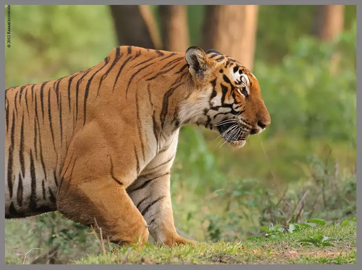

These powerful cats are a keystone species, Which means we need them to keep other animal populations in check. Without them other species of animals would over populate and cause problems for other animals, and even us humans.
Tigers and humans are never on a comparable scale. Physically, a tiger can kill a man with one blow but the reverse would feel like a tickle for the former.
MUSCLE MASS AND STRENGTH: Tigers contain 72.6% of muscle, while that of Lion is 58.8% “Tigers can jump over a ten foot fence with a 450 kg bull in their mouth and tigers also have the strongest big cat bite force rivaled only by the jaguar, tigers are also known to hunt, kill and eat brown bears+9, When compared to a human a tiger alone is as strong as at least 5 adult humans combined. The bite force of a tiger is six times the bite force of a human.

like the Jaguar and Leopard, The Tiger is also very versitile, They can swim for quite a distance and they actual love the water. They have also been known to live in dry climate, wetlands, forests, grasslands and other places.
